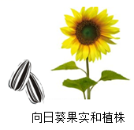
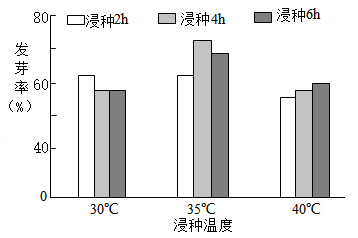
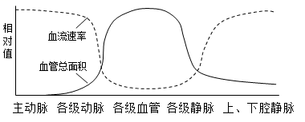
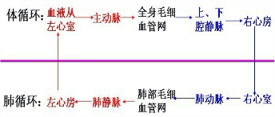
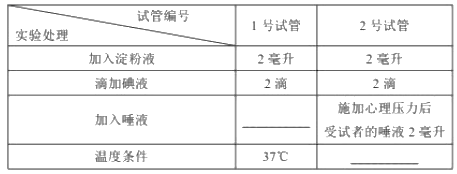
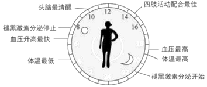

2018年北京市中考生物试题 原卷解析
2018年北京市高级中等学校招生考试
生物试卷
第一部分选择题
1. 人体结构和功能的基本单位是
A. 细胞B. 组织
C. 器官D. 系统
【答案】A
【解析】
【详解】除病毒外，生物体都是由细胞构成的，细胞是生物体结构和功能的基本单位。细胞是生命活动的基本单位。故选A。
2. 下列关于草履虫的叙述，不正确的是
A. 生活在水中B. 由一个细胞构成
C. 不需要从外界获取营养物质D. 能独立完成各项生命活动
【答案】C
【解析】
【详解】草履虫是单细胞生物，生活在水中，由一个细胞构成，能独立完成各项生命活动，生活需要从外界获取营养物质。
3. 在观察菜豆植株的不同结构时，选取实验材料不正确的是
A. 观察气孔一一叶表皮B. 观察子房——雄蕊
C. 观察根毛——根尖D. 观察子叶——种子
【答案】B
【解析】
【分析】菜豆是双子叶植物，具有根、茎、叶、花、果实、种子六大器官，根据各个器官 特点解答。
特点解答。
【详解】气孔位于叶的表皮，A正确。
子房是雌蕊组成部分，不是雄蕊的，B错误。
根毛位于成熟区，成熟区是根尖的一部分，C正确。
子叶是种子的一部分，D正确。
4. 关于“观察人口腔上皮细胞”实验的叙述，不正确的是
A. 在载玻片中央滴加生理盐水B. 碘液染色有利于观察
C. 应先用低倍镜进行观察D. 能观察到细胞壁
【答案】D
【解析】
【详解】口腔上皮细胞是动物细胞，滴加和人体细胞液浓度相同的生理盐水，目的是维持细胞的原有形状，便于观察，A正确；观察和制作口腔上皮细胞临时装片，为了观察的更清楚，应该用稀碘液染色，B正确；用低倍镜进行观察口腔上皮细胞，C正确；口腔上皮细胞是动物细胞，基本结构包括细胞膜、细胞质和细胞核，没有细胞壁，D错误。
5. 人的个体发育起点是
A. 精子B. 卵细胞C. 受精卵D. 婴儿
【答案】C
【解析】
【详解】人体的生长发育是从受精卵形成胚胎并且长成为性成熟个体的过程。人体的发育包括两个过程，一是从受精卵发育到成熟的胎儿的胚胎发育阶段；二是从婴儿出生发育到个体成熟的胚后发育阶段。精子和卵细胞不能进行细胞分裂、分化、发育等生命活动。只有精子与卵细胞结合形成受精卵时，才是人体发育的起点。
6. 球迷观赛时，看到精彩瞬间会激动得欢呼雀跃。对球迷这种反应的分析不正确的是
A. 这种反应过程属于反射
B. 这种反应过程不需要大脑皮层参与
C. 眼和耳是感受刺激的主要器官
D. 骨骼肌是产生动作的效应器
【答案】B
【解析】
【详解】球迷观赛时看到精彩瞬间，会激动得欢呼雀跃。球迷这种反应属于条件反射，这种反应过程需要大脑皮层参与，眼和耳是感受刺激的主要器官，骨骼肌是产生动作的效应器。
7. 排球运动员在比赛中需完成手腕屈和伸等动作，关于这些动作的分析不正确的是

A. 在神经系统调节下完成
B. 由一块骨骼肌收缩完成
C. 由骨骼肌牵引骨绕关节活动完成
D. 体现了关节的牢固和灵活
【答案】B
【解析】
【详解】运动的产生是在神经系统的调节下完成的，当控制某些骨骼肌的神经受到损伤时，身体的这部分就可能会瘫痪，并且可能导致骨骼肌的萎缩，A正确；一个动作的完成总是由两组肌肉相互配合活动，共同完成的，B错误；骨骼肌有受刺激而收缩的特性，当骨骼肌受神经传来的刺激收缩时，就会牵动着它所附着的骨，绕着关节活动，于是躯体就产生了运动，C正确；在运动中，关节周围有关节囊包括着，密闭的关节腔内有滑液，保证了关节既牢固、又灵活，D正确。
8. 深圳的国家基因库中，储存有不同生物的基因样本超过1000万份。下列叙述不正确的是
A. 基因是有遗传效应的DNA片段B. 基因可以在亲子代之间传递
C. 基因库中储存的基因都相同D. 建立基因库利于保护生物多样性
【答案】C
【解析】
【详解】基因是具有遗传效应的DNA片段，是决定生物性状的基本单位，A正确；基因通过精子与卵细胞在亲子代之间传递，B正确；不同物种（兔和小麦）之间基因组成差别很大，同种生物如兔之间（有白的、黑的、灰的等）基因也有差别，所以基因库中储存的基因都不相同，C错误；建立基因库利于保护生物多样性，D正确。
9. 下图是人体细胞中性染色体组成示意图，下列叙述不正确的是

A. 男性产生含X或Y染色体的精子
B. 女性产生含X染色体卵细胞
C. 新生儿的性别仅由母亲决定
D. 新生儿的性别比例接近1：1
【答案】C
【解析】
【详解】男性产生两种类型的精子--含X染色体的精子和含Y染色体的精子，A正确；女性则只产一种含X染色体的卵细胞，B正确；受精时，如果是含X的精子与卵子结合，就产生具有XX的受精卵并发育成女性；如果是含Y的精子与卵子结合，就产生具有XY的受精卵并发育成为男性。因此，新生儿的性别主要取决于“父亲的精子”，C错误；男性的两种精子与女性的卵细胞结合是随机的，结合机会相同，生男生女的机会均等，各是50%。所以在自然状态下，人类社会中男女性别比例接近1：1，D正确。
10. 我国科学家利用神舟飞船搭载实验。选育出辣椒新品种“航椒II号”，与普通辣椒相比增产约27%，高产性状的产生源于（ ）
A. 生物的遗传B. 生物的变异C. 生物的生长D. 生物的发育
【答案】B
【解析】
【详解】太空育种，也称空间诱变育种，就是将农作物种子或试管种苗送到太空，利用太空特殊的、地面无法模拟的环境（高真空，宇宙高能离子辐射，宇宙磁场、高洁净）的诱变作用，使种子产生变异，再返回地面选育新种子、新材料，培育新品种的作物育种新技术。太空育种具有有益的变异多、变幅大、稳定快，以及高产、优质、早熟、抗病力强等特点。我国科学家利用神舟飞船搭载实验，选育出辣椒新品种“航椒II号”，与普通辣椒相比增产约27%，高产性状的产生源于生物的变异。
11. 下列获得新植株的方式不属于无性生殖的是
A. 小麦种子繁殖B. 苹果和梨嫁接
C. 马铃薯块茎繁殖D. 月季枝条扦插
【答案】A
【解析】
【分析】有性生殖是指经过两性生殖细胞（例如精子和卵细胞）的结合成为受精卵，再由受精卵发育成为新的个体的生殖方式；无性生殖的关键在于没有两性生殖细胞的结合，由母体直接产生新个体的方式，如嫁接、扦插、压条、克隆、组织培养等。
【详解】“苹果和梨嫁接”、“马铃薯用块茎繁殖”、“月季枝条扦插”，都没有经过两性生殖细胞的结合，因此都属于无性生殖；种子的胚是由受精卵发育形成的，因此，“小麦种子繁殖”属于有性生殖。
故选A。
12. 下列动物行为属于学习行为的是
A. 鹦鹉学舌B. 喜鹊筑巢C. 孔雀开屏D. 雄鸡报晓
【答案】A
【解析】
【详解】鹦鹉学舌是在先天性行为的基础上，通过生活经验和“学习”逐渐建立起来的一种新的行为活动，属于学习行为；喜鹊筑巢、孔雀开屏和雄鸡报晓都是动物的一种本能，由体内的遗传物质决定的，属于先天性行为。
点睛：动物行为分为先天性行为和学习行为。先天性行为是指动物一出生就有的一种行为方式，是动物的一种本能，由体内的遗传物质决定的；学习行为是动物出生后在成长的过程中通过环境因素的影响，通过生活经验和“学习”逐渐建立起来的，是在先天性行为的基础上建立的一种新的行为活动，也称为后天性行为。
13. 节肢动物鳃的进化如下图。下列叙述不正确的是

A. 鰓进化出的结构是不同的
B. 鰓的进化有利于适应生存环境
C. 鰓进化与遗传、变异无关
D. 鰓的进化是自然选择的结果
【答案】C
【解析】
【详解】据图可见：鳃进化出的结构是不同的，A正确；据图可见：鳃的进化有利于不同动物适应不同的生存环境，B正确；生物的遗传变异和环境因素的共同作用，导致了生物鳃进化，C错误；生物进化的方向是由环境的定向选择决定的即自然选择的结果（适者生存）。D正确。
14. 下列防治流感的做法不正确的是
A. 患流感后一定要大量服用抗生素
B. 患流感后尽量少去公共场所
C. 患者在打喷嚏时应掩住口鼻
D. 注射流感疫苗有一定的预防作用
【答案】A
【解析】
【详解】流感是由病毒引起的，抗生素是用来治疗因病菌引起的疾病的药物，对于病毒性的疾病无疗效，A错误；流感具有传染性，患流感后尽量少去公共场所，B正确；患者在打喷嚏时应掩住口鼻，防止病毒的传染，C正确；注射流感疫苗有一定的预防作用，D正确。
15. 小林在学校的综合实践活动中制作下列食品时，利用的主要微生物不正确的是
A. 面包一酵母菌B. 酸奶一乳酸菌
C. 食醋一醋酸(杆)菌D. 泡菜—霉菌
【答案】D
【解析】
【详解】制馒头、做面包、酿酒等要用到酵母菌，A正确；制酸奶要用到乳酸菌，B正确；制醋要用到醋酸杆菌，C正确；制泡菜要用到乳酸菌，D错误。
第二部分非选择题
16. 北京西山国家森林公园是典型的森林生态系统，其中元宝枫是重要的红叶观赏植物。
(1)元宝枫是生态系统成分中的____________，其种子外有果皮包被，属于植物________。
(2)黄刺、天牛等的幼虫均可以取食元宝枫叶片，捕虫鸟捕食这些幼虫。据此写出该生态系统中的一条食物链：______________。黄刺幼虫与天牛幼虫之间的关系为____________。
(3)黄刺蛾的一生经历了受精卵、幼虫、蛹和成虫四个时期，这种发育过程属于________(填“完全”或“不完全”)变态发育。
(4)进入秋季，叶色逐渐褪绿变红。在日最低平均温度低于8℃、昼夜温差大于13℃时，叶片变色效果最佳，西山漫山红遍、层林尽染。据此分析，影响叶片变红的非生物因素主要是____________________。
【答案】 ①. 生产者 ②. 被子 ③. 元宝枫→天牛幼虫→食虫鸟 ④. 竞争 ⑤. 完全 ⑥. 温度
【解析】
【详解】生态系统的组成包括非生物部分和生物部分。非生物部分有阳光、空气、水、温度、土壤（泥沙）等；生物部分包括生产者（绿色植物）、消费者（动物）、分解者（细菌和真菌）。
（1）生态系统的组成包括非生物部分和生物部分。生物部分包括生产者（绿色植物）、消费者（动物）、分解者（细菌和真菌）。元宝枫是植物，能够进行光合作用，是生态系统成分中的生产者，其种子外有果皮包被，属于被子植物。
（2）生态系统中生产者与消费者之间吃与被吃的关系构成食物链，该生态系统中的一条食物链：元宝枫→天牛幼虫→食虫鸟；或元宝枫→黄刺蛾幼虫→食虫鸟。黄刺蛾幼虫与天牛幼虫都以元宝枫叶片为食，二者之间形成竞争关系。
（3）黄刺蛾的一生经历了受精卵、幼虫、蛹和成虫四个时期，这种发育过程属于完全变态发育。
（4）影响生物生活的环境因素可以分为两类：一类是光、温度、水、空气等非生物因素，另一类是生物因素。昼夜温差大于13℃时，叶片变色效果最佳，说明影响叶片变红的非生物因素主要是温度。
17. 向日葵是双子叶植物，其果实既可直接食用，也可用于生产葵花籽油。
(1)由于果皮较厚，向日葵的种子自然萌发需要较长时间，生产中常用浸种方法提高发芽率。为探究浸种的最适条件，同学们进行了相关实验，结果如下图。


由图可知，浸种的最适条件是____________________。
(2)向日葵种子中的营养物质在细胞内通过__________作用为种子的萌发提供能量。
(3)幼苗生命活动所需的水和无机盐通过____________从土壤中吸收。
(4)向日葵的花完成受精后，胚珠发育成种子，子房发育成_____________。
(5)向日葵可用于生产葵花籽油，这是由于____________作用合成的糖类在细胞内转化为脂防。
【答案】 ①. 35℃浸种4小时 ②. 呼吸 ③. 根 ④. 果实 ⑤. 光合
【解析】
【分析】分析图中信息，据此回答问题。种子进行呼吸作用消耗有机物，释放能量，其公式为：有机物+氧→二氧化碳+水；植物通过根吸收溶解在水中的无机盐。子房壁发育成果皮，子房中的胚珠发育成种子，胚珠里的受精卵发育成胚，最终雌蕊的子房发育成果实。光合作用的公式如图：二氧化碳+水→有机物（储存能量）+氧气。
【详解】（1）据图可见：向日葵的浸种最适宜条件是35℃浸种4小时。
（2）呼吸作用消耗氧气分解有机物释放能量，为细胞生命活动提供能量。
（3）根的主要功能是吸收水分和无机盐。幼苗生命活动所需的水和无机盐通过根从土壤中吸收。
（4）受精完成后，只有子房部分继续发育，子房壁发育成果皮；胚珠珠被发育成种子；受精卵发育成胚；受精极核发育成胚乳，子房发育成果实。
（5）叶片通过光合作用合成脂肪通过筛管运输到果实。所以向日葵可用于生产葵花籽油。
【点睛】解答此题关键是知道绿色植物通过光合作用制造有机物，果实与种子，种子萌发的条件和过程。
18. 在人的体循环过程中，各段血管的血流速率与血管总面积如下图。

(1)体循环过程中，心脏的左心室收缩，血液进入__________，流经各级动脉、毛细血管网、各级静脉，汇集到上、下腔静脉，流回___________心房。
(2)毛细血管管壁薄，由___________层上皮细胞构成。据图可知，在体循环的各段血管中，毛细血管的总面积最大，血流速率最_________。这样的结构特点有利于血液与组织细胞之间进行_________________。
(3)人体内具有(2)中所述结构特点的器官有___________________(请举一例)。
【答案】 ①. 主动脉 ②. 右 ③. 1 ④. 慢 ⑤. 物质交换 ⑥. 肺或小肠等
【解析】
【详解】（1）血液循环的途径如图所示：

体循环是指血液由左心室进入主动脉，再流经全身的各级动脉、毛细血管网、各级静脉，最后汇集到上下腔静脉，流回到右心房的循环。血液经过体循环，由动脉血变成了静脉血。
（2）毛细血管管壁薄，由一层上皮细胞构成。动脉血管血流快，静脉血管血流慢，毛细血管血流最慢，因此从大动脉，到动脉，再到小动脉，最后到毛细血管，血流速率越来越小，毛细血管最小。这样的结构特点有利于血液与组织细胞之间进行物质交换。
（3）人体内肺泡的数量很大，肺泡外面包围着丰富的毛细血管，肺泡壁和毛细血管壁都由一层扁平的上皮细胞构成，有利于肺泡与血液间进行气体交换，这充分体现了生物学结构与功能相适应的观点。小肠绒毛内有丰富的毛细血管和毛细淋巴管，小肠绒毛的壁和毛细血管壁都很薄，只有一层上皮细胞构成，这种结构特点有利于小肠吸收营养物质。
19. 运动员的心理状况对运动成绩有一定的影响。为更好地备战2022年冬奥会，研究者以唾液中唾液淀粉酶的含量作为检测指标，探究心理压力对运动员的影响。
(1)人体消化道内，淀粉的分解起始于________，这是由于唾液中含有唾液淀粉酶。
(2)分别在施加心理压力前、后取受试者的唾液，进行如下实验。

①1号试管“？”处应加入____________。设置1号试管在本实验中起到__________作用。
②2号试管“？”处的温度条件应该是_____________℃。
③观察，记录并比较1号和2号试管蓝色褪去时间，若结果为_________，则说明施加心理压力使受试者唾液淀粉酶的含量增加。
【答案】 ①. 口 ②. 施加心理压力前受试者的唾液2ml ③. 对照 ④. 37 ⑤. 2号试管颜色褪去时间少于1号试管
【解析】
【详解】在研究一种条件对研究对象的影响时，所进行的除了这种条件不同以外，其它条件都相同的实验，叫对照实验。
（1）人们在进食时口腔周围的唾液腺分泌唾液，唾液内含有消化淀粉的酶，将淀粉分解成麦芽糖。所以淀粉的分解起始于口腔，这是由于唾液中含有唾液淀粉酶。
（2）①要探究唾液对馒头的消化作用，要以唾液为变量设置①对照实验，因此，在1号试管里“？”处应加施加心理压力前受试者的唾液2ml，这样就与2号试管形成了一组以施加心理压力前、后取受试者的唾液为变量的对照实验，设置1号试管在本实验中起到对照作用。
②2号试管“？”处的温度条件应该是37℃，因为唾液淀粉酶分解淀粉受温度的影响，37℃接近人的体温，唾液淀粉酶分解淀粉的能力最强，而且与①号温度条件相同。
③观察，记录并比较1号和2号试管蓝色褪去时间，若结果为2号试管颜色褪去时间少于1号试管，则说明施加心理压力使受试者唾液淀粉酶的含量增加；若结果为2号试管颜色褪去时间等于1号试管，则说明施加心理压力使受试者唾液淀粉酶的含量没有变化；若结果为2号试管颜色褪去时间大于1号试管，则说明施加心理压力使受试者唾液淀粉酶的含量减少。
20. 阅读科普短文，回答问题。
猫头鹰昼伏夜出，大雁秋去春来，植物春华秋实……你可曾想过，他们是如何感知自然并顺时而为的？
中国古代医学典籍《黄帝内经》中早有“人与天地相参也，与日月相应也”的阐述。由于地球的自转和公转，导致光照、温度等环境因素均呈现出昼夜和季节性周期变化，生物体适应这种周期性变化，形成了生物节律。如人的体温周期波动、果蝇的羽化(从到成虫)均表现为昼夜节律，鸟类的迁徙表现为年节律。
生物体内调拉生物节律的机制称为生物钟。从简单的细菌到植物、动物都有生物钟。人们很早就观察到含羞草的叶片白天张开、夜晚合拢的现象。当把含羞草放到一个黑暗的环境中时，发现含羞草叶片开合仍会维持原来的昼夜节律。后来，科学家通过对果绳羽化节律的研究，分离得到第一个生物钟基因——per基因，这项成果获得了2017年诺贝尔生理学或医学奖。
对于人体来说，生长激素的分泌高峰一天通常只出现一次，大约在夜晚入睡一小时后，且早睡觉比晚睡觉的峰值高很多。晚上不睡，白天补觉则无济于事，因为白天睡觉不会引起生长激素分泌量的增加。可见，生物钟如钟表一般，可以精确地调控行为、激素水平、睡眼、体温等生理机能。

生物钟是自然选择的结果，赋予了生物预见和应对自然环境变化的能力，有利于生物的生存和繁衍。了解和顺应大自然赋予我们的生物钟，将使我们的生活更加健康。
(1)通过对含羞草叶片开合的研究，人们认识到含羞草叶片开合_______(填“有”或无”)内在生物节律。果蝇羽化节律的研究表明，生物节律是由____________控制的。
(2)据图可知，18：00-19：00是人体的____________和体温最高的时间。
(3)根据文中信息分析，下列属于年节律的是________________。
a.人体体温变化 b.人体褪黑激素的分泌c.北极黄鼠冬眠d.猫头鹰昼伏夜出
(4)青春期是青少年身体生长发育的黄金时期，由__________分泌的生长激素能促进骨骼和肌肉的生长发育。因此，遵循昼夜节律对维持生长激素的正常分泌至关重要。
(5)健康生活需要良好的生活习惯。结合对生物钟的理解，请你写出一条健康生活的建议：_________________。
【答案】 ①. 有 ②. 基因 ③. 血压 ④. C ⑤. 垂体 ⑥. 不熬夜、合理安排睡眠时间
【解析】
【分析】随地球、日、月的周期变化形成的有周期、节律的行为，叫节律行为。
【详解】（1）人们很早就观察到含羞草的叶片白天张开、夜晚合拢的现象。当把含羞草放到一个黑暗的环境中时，发现含羞草叶片开合仍会维持原来的生物钟，说明含羞草的开合有节律。科学家通过对果绳羽化节律的研究，分离得到第一个生物钟基因--per基因，说明生物的节律受基因控制。
（2）据图可见：在18：00-19：00是人体的血压和体温最高的时间。
（3）人的体温周期波动、人体褪黑激素的分泌、猫头鹰昼伏夜出均表现为昼夜节律；北极黄鼠冬眠表现为年节律。故选C。
（4）垂体分泌生长激素，调节生长发育。生长激素的分泌高峰一天通常只出现一次，大约在夜晚入睡一小时后，且早睡觉比晚睡觉的峰值高很多。晚上不睡，白天补觉则无济于事，因为白天睡觉不会引起生长激素分泌量的增加。因此，遵循昼夜节律对维持生长激素的正常分泌至关重要。
（5）生物钟是自然选择的结果，赋予了生物预见和应对自然环境变化的能力，有利于生物的生存和繁衍。所以建议大家不熬夜、合理安排睡眠时间，养成良好的生活习惯。
【点睛】解题的关键是理解节律行为及生物钟的特点。